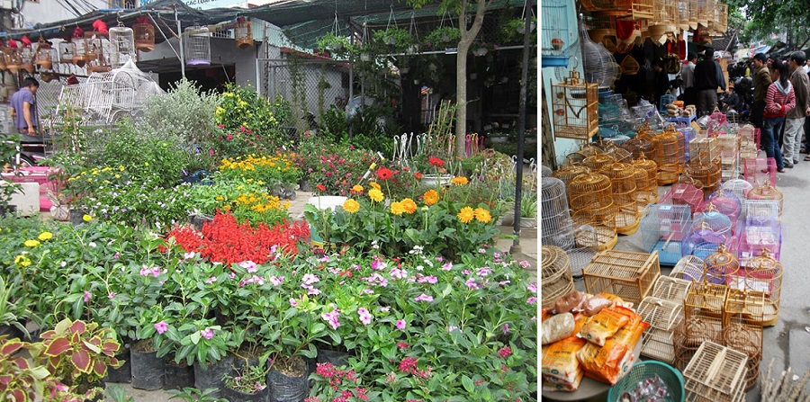
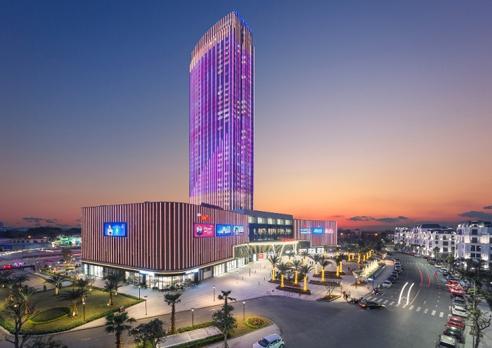
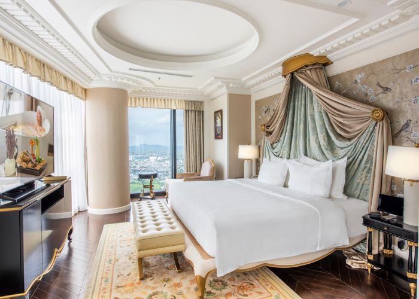

19 điểm du lịch Hải Phòng tuyệt đẹp nhất định phải đến một lần
Hải Phòng từ lâu đã nổi tiếng với nhiều điểm du lịch tuyệt đẹp và các món ăn hấp dẫn. Các điểm du lịch Hải Phòng dưới đây được đông đảo du khách tìm kiếm cho các chuyến đi ngắn ngày cùng gia đình và bạn bè.
Hải Phòng – Thành phố hoa phượng đỏ luôn là địa điểm lý tưởng cho các chuyến du lịch ngắn ngày. Các điểm du lịch Hải Phòng hết sức đa dạng với phong cảnh tuyệt đẹp, kèm theo đó là văn hóa ẩm thực độc đáo trở thành nơi níu giữ dấu chân của du khách. Khám phá vẻ đẹp Hải Phòng qua 19 điểm đến được liệt kê dưới đây!
1. Những điểm du lịch ở Hải Phòng: Các biển, đảo, vịnh đẹp
1.1. Bãi biển đồ Sơn
- Địa chỉ: Khu du lịch Đồ Sơn, Vạn Hương, Đồ Sơn, Hải Phòng
Bãi biển Đồ Sơn được biết đến là một trong những bãi biển đẹp nhất tại miền Bắc. Vì vậy, nếu bạn có dịp ghé thăm Hải Phòng thì đừng bỏ lỡ điểm du lịch này. Bãi biển này được chia làm các khu I, II và III, tuy nhiên, nhiều du khách chủ yếu tắm biển và vui chơi ở khu II vì đây là khu vực tắm đẹp, biển thoai thoải, cát mịn.
Biển Đồ Sơn là một trong những điểm du lịch Hải Phòng đẹp và hấp dẫn nhấtKhông chỉ thỏa sức vui chơi với nhiều hoạt động trên biển, điểm du lịch ở Hải Phòng này còn hấp dẫn du khách bởi nhiều món ăn hải sản thơm ngon, tươi sống. Hệ thống nhà hàng tại đây cũng rất đa dạng, du khách có thể dễ dàng thưởng thức những bữa ăn ngon, giá rẻ cùng với gia đình.
Nếu bạn đang tìm kiếm các điểm du lịch Hải Phòng về biển thì bãi biển Đồ Sơn chắc chắn sẽ là lựa chọn ưu tiên hàng đầu cho chuyến đi lý tưởng nhất.
1.2. Đảo Hòn Dấu
- Địa chỉ: Khu 3, phường Vạn Hưng, quận Đồ Sơn, Hải Phòng
Các điểm du lịch Hải Phòng mùa hè hết sức đa dạng với các vùng biển, huyện đảo. Một trong những lựa chọn được nhiều du khách quan tâm đó chính là đảo Hòn Dấu.
Địa điểm này khá thuận tiện khi cách Hà Nội và trung tâm thành phố Hải Phòng không xa. Từ tuyến đường Phạm Văn Đồng du khách chỉ cần di chuyển 5km có thể đến điểm du lịch này.
Khung cảnh yên bình, hoang sơ tại điểm du lịch Hòn Dấu (Ảnh:Sưu tầm)Không gian tại Hòn Dấu Hải Phòng vô cùng thoáng đãng, mát mẻ, rất phù hợp với những chuyến du lịch cuối tuần. Tại đây, du khách có thể trải nghiệm các hoạt động du lịch biển, chụp ảnh check-in. Ngoài ra, tại địa điểm du lịch Hải Phòng này, du khách có thể dạo quanh ngắm nhìn những loài động vật sống tự nhiên tại đây như nai, thỏ, các loài chim…
2. Điểm danh những địa điểm vui chơi ở Hải Phòng phục vụ mua sắm
2.1. Chợ Hàng - điểm du lịch Hải Phòng độc đáo của địa phương
- Địa chỉ: Đường Chợ Hàng, Lê Chân, Hải Phòng
Để biết được du lịch thành phố hoa phượng đỏ có gì hay, du khách không thể bỏ lỡ các chợ Hải Phòng, khu trung tâm thương mại, mua sắm. Tại chợ Hàng, du khách sẽ được trở về với tuổi thơ bởi khung cảnh tại đây rất bình dị, thân thương như một khu chợ quê mang đậm nét văn hóa của dân tộc Việt Nam.
 Chợ Hàng là phiên chợ quê thường bán các mặt hàng cũng khá quen thuộc (Ảnh: Sưu tầm)Đây cũng là khu chợ gần với các điểm du lịch Hải Phòng như Đồ Sơn, Cát Bà… Vì vậy, du khách có thể ghé quá để mua nhiều món đồ về làm quà cho chuyến đi của mình. Chợ Hàng là phiên chợ quê, nên tại đây thường bán các mặt hàng cũng khá mộc mạc như: con giống, cây giống… Ngoài ra, phiên chợ này còn có khu chim cảnh, khu vật nuôi cho bạn thỏa sức khám phá. Bạn cũng sẽ không phải lo lắng vì giá thành tại chợ Hàng rất rẻ.
2.2. Vincom Plaza Imperia Hải Phòng
- Địa chỉ: Khu đô thị Vinhomes Imperia, Hồng Bàng, Hải Phòng
Vincom Plaza Imperia Hải Phòng nằm trong tòa khách sạn 5 sao Vinpearl Hotel Imperia Hải Phòng của tập đoàn Vingroup. Đây là tòa nhà bao gồm 45 tầng, cao 148m. Khu trung tâm thương mại bên dưới được xem là một trong các điểm du lịch Hải Phòng vô cùng thu hút, nhất là với du khách trẻ tuổi.
Đặc biệt, không gian hiện đại với đa dạng các quầy hàng, thương hiệu nổi tiếng, kèm theo đó là hệ thống các khu vui chơi, rạp chiếu phim, cafe… sẽ giúp cho bạn thoải mái vui chơi giữa thành phố này.
Nếu có dịp ghé thăm Vincom Plaza Imperia Hải Phòng, bạn đừng quên trải nghiệm nghỉ ngơi, dừng chân tại Vinpearl Hotel Imperia Hải Phòng. Hệ thống phòng nghỉ sang trọng, hiện đại tại đây sẽ giúp bạn cực kỳ thư giãn trong chuyến đi của mình. Bên cạnh đó, hầu hết các phòng nghỉ đều có view hướng ra toàn thành phố, giúp cho bạn có thể chiêm ngưỡng vẻ đẹp của trung tâm thành phố Hải Phòng.
Ngoài ra, tại đây còn có các phòng hội họp với đầy đủ thiết bị âm thanh, ánh sáng giúp cho bạn có thể tổ chức nhiều sự kiện lớn hoặc tiệc cưới….